A 2-D diffusion eigenproblem with a one-parameter coefficient
This is the reference example for the whole method: a scalar diffusion eigenproblem on the unit square whose coefficient depends on a single scalar parameter \mu. The spatial problem is two-dimensional; the parameter it is swept over is one-dimensional, \mu \in [0.4, 1]. Those two dimensions are unrelated and worth keeping apart — everything below is “2-D in space, 1-D in parameter”.
The page is built in the order the method itself works. First the shared groundwork: the model, the matching operation on a single subinterval, and the discretisation. Then each of the two operating modes gets a full, self-contained treatment, run to its own convergence: Window mode — the faithful reproduction of the published 1-D grid — followed by FirstK mode — a fixed-band approximation. The page closes with an honest side-by-side comparison of the two.
Related pages
- ROM vs dense sweep — how accurately the converged surrogate reproduces a dense solve at arbitrary \mu.
- Tolerance perturbation — evidence that the tolerance values used here are load-bearing.
- Knob sweep — how the grid responds as the verdict thresholds move.
- Two-parameter sweep — the same PDE over a 2-D parameter box.
Why this example
It is the smallest problem that shows the full phenomenon the method exists to handle: eigenvalue branches that approach and exchange character as the parameter varies, and an adaptive grid that must find those events on its own and refine around them. It is small enough to solve densely for ground truth, so every claim the adaptive loop makes can be checked against a known answer — which is why the accuracy and robustness studies (ROM vs dense, tolerance perturbation) use it as their reference. If the method works here, the machinery is sound; larger problems (a 2-D parameter box, 6-D elasticity) add scale, not new ideas.
The model
Find (\lambda, u) \in \mathbb{R} \times H_0^1(\Omega) on the unit square \Omega = [0,1]^2 such that
-\nabla \cdot \bigl(c(\mu)\,\nabla u\bigr) \;=\; \lambda\,u \quad \text{in } \Omega, \qquad u = 0 \text{ on } \partial\Omega .
In weak form this is the generalised eigenproblem: find (\lambda, u) \in \mathbb{R} \times H_0^1(\Omega) with
a(u, v;\,\mu) \;=\; \lambda\, b(u, v) \qquad \forall\, v \in H_0^1(\Omega), a(u, v;\,\mu) = \int_\Omega \bigl(c(\mu)\,\nabla u\bigr)\cdot \nabla v \, \mathrm{d}x, \qquad b(u, v) = \int_\Omega u\,v \, \mathrm{d}x .
The coefficient is a global, space-constant 2\times 2 matrix:
c(\mu) \;=\; \begin{bmatrix} \mu^{-2} & 1 \\[2pt] 1 & 0.7^{-2} \end{bmatrix}, \qquad \mu \in [0.4,\, 1] .
Only the (1,1) entry varies with \mu; the other three are fixed. Because the weak form is affine in the entries of c, the stiffness matrix decomposes into four fixed tensor-component matrices K_{ij} (one per entry of c), assembled once:
K(\mu) \;=\; \sum_{i,j \in \{1,2\}} c_{ij}(\mu)\, K_{ij} \;=\; \mu^{-2}\,K_{11} \;+\; \bigl(K_{12} + K_{21} + 0.7^{-2}\,K_{22}\bigr).
Each parameter point then costs four cached component contractions plus one eigensolve — no re-meshing, no per-\mu quadrature. This affine structure is what the surrogate construction relies on.
A single subinterval
Before any sweep, consider the method on a single subinterval [\mu_1, \mu_2] = [0.4, 0.7] — the atomic operation the adaptive loop repeats on every edge of its grid, and the reference’s worked §3.3.1 example. Understand one edge and the whole loop is just “do this everywhere, bisect where it fails”.
Inside the spectral window I_\lambda = [0, 270] there are four eigenvalues at \mu_1 = 0.4 and nine at \mu_2 = 0.7 (the reference reports exactly this band count). Two steps:
- A-priori matching. Build the cost matrix D_{j\ell} pairing each \mu_1-band j with each \mu_2-band \ell — a weighted sum of eigenvalue distance (weight 1) and eigenvector misalignment (weight 200, measured by the M-inner-product principal angle). The optimal (Hungarian) assignment matches the four \mu_1-bands to \mu_2-bands \sigma^\star = (1, 2, 5, 8) (1-indexed).
- A-posteriori certification. Form the projection matrix \Pi_{j\ell} = v_j(\mu_1)^\top M(\bar\mu)\, v_\ell(\mu_2) on the matched core and apply the relative threshold t_\pi = 0.21 (the reference’s stated value for this worked subinterval). The first matched pair is uniquely supported → certified; the second has a competing off-pair entry → refine; the higher pairs sit in a shared near-degenerate cluster → cluster.
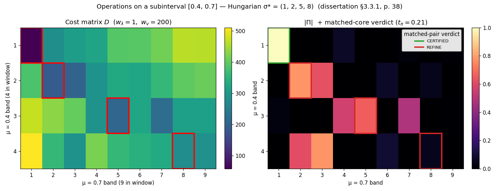
A refine verdict on any edge tells the loop to bisect it and re-test the two halves. Both sweeps below are exactly this operation on an adaptively growing grid — they differ only in how many bands each grid point carries.
Discretisation
Both runs share the same spatial discretisation and parameter domain; only the spectral bookkeeping (and so the tolerances tied to it) differs between modes.
| Quantity | Value | Role |
|---|---|---|
| Mesh | \texttt{mesh\_n} = 64, P1 triangulation | spatial discretisation (rebuild choice; fine enough that the crossings below are mesh-independent) |
| Parameter box | \mu \in [0.4,\, 1.0], d_{\text{param}} = 1 | parameter domain |
| Max refinement levels | 8 (Window terminates at L = 3, FirstK at L = 1) | iteration cap |
The two operating modes split here:
- Window mode keeps whichever eigenvalues fall inside a fixed spectral window I_\lambda = [0, 270], so per-node rank is ragged (4 bands at \mu = 0.4, 9 at \mu = 0.7). This is how the reference 1-D example was actually computed.
- FirstK mode keeps a fixed number n_{\text{eigs}} = 6 of the smallest bands at every node. This is the rebuild’s fixed-band approximation.
Each mode is treated in full below, on its own honest tolerances, before they are compared.
Window mode — the faithful reproduction
This is the run that reproduces the reference 1-D grid, because the §3.3.2 example was itself computed in window mode. Snapshots are ragged: each parameter point keeps whatever eigenpairs fall inside the fixed window
I_\lambda = [0,\, 270]
(the reference’s stated window — the band counts it reports, four eigenvalues at \mu = 0.4 and nine at \mu = 0.7, are reproduced exactly). The verdicts use the one a-posteriori (Hungarian) path with anchored-absolute pruning at (t_\pi = 0.21,\, t_\lambda = 0.085): t_\pi = 0.21 is the §3.3.1 subinterval value above, and t_\lambda = 0.085 is the MATLAB clustering tolerance — the pair is validated by reproducing the published L=0\ldots L=3 grid exactly (below). A surplus band that merely enters or leaves the window between adjacent nodes is certified by a row-\ell_2-norm test (the reference’s Algorithm 6 “certify, don’t refine” gate) rather than forcing refinement; those enter/exit events are recorded for introspection but do not drive the grid.
Reference spectrum
The ground truth: a dense \mu-sweep, solved directly on a window [0, 400] — each \mu-point returns exactly the eigenpairs inside that band (a ragged window solve, nothing above 400 computed, nothing clipped) — and drawn in character-tracked branch order: each curve follows one eigenfunction (matched by mass-overlap across the sweep), so where two branches exchange energetic order the figure draws a genuine crossing instead of sorting it away. The parameter is one-dimensional, so every crossing here is avoided — the gap stays positive, there is no true degeneracy (that needs two free parameters). But an avoided crossing still exchanges eigenfunction character: the two branches approach, swap which one is higher, and separate, so their curves cross. This example carries four such swaps — bands 3↔︎4 (near \mu \approx 0.45 and again \approx 0.86), 5↔︎6 (\approx 0.72), and 7↔︎8 (\approx 0.81) — visible as X crossings in the low bands. The grey strip is the algorithm’s kept window I_\lambda = [0, 270]; the sweep window runs a little higher so the bands that descend into the kept window as \mu grows are visible entering from above. The adaptive loop has no access to this; it must rediscover the crossings from local edge tests alone.
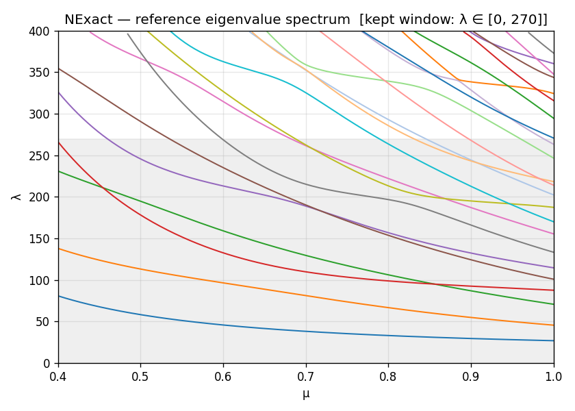
Adaptive grid evolution
Drag the slider (or use ←/→ when focused) to step through L = 0..3. Nodes are coloured by insertion level; the loop bisects only edges flagged for refinement, so nodes pile up around the crossing region. The grid grows 3 \to 5 \to 7 \to 8 nodes.
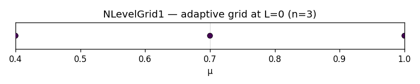
Per-level surrogate
Solid coloured curves are the surrogate, reconstructed from the greedy grid’s own stored matchings (not re-matched) by the same fixed-slot reshuffle used for the reference spectrum; dashed grey is the dense reference. Branch k of the surrogate keeps one colour across every level and follows branch k of the reference through a crossing. Scroll through L = 0..3 to watch the surrogate converge as the grid refines. Where a band drops out of [0, 270] between adjacent nodes the window surrogate shows an honest gap in a fixed slot — the broken curve is one branch keeping its colour across a window exit/entry, never a connector to an unrelated branch.
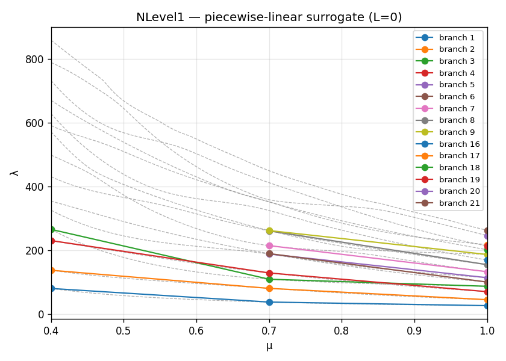
A-posteriori projection matrices
Each panel shows eigenvalues scattered in the (\mu, \lambda) plane at the grid nodes active at that level. Solid coloured lines are the a-priori Hungarian-matched pairs — the algorithm’s candidate for “same branch, step left.” Black dashed lines are alternative matchings: off-diagonal entries |\Pi_{j\ell}| that survive the pruning threshold but are not the primary match. Their presence at an edge is the direct REFINE signal — it says “I cannot confidently assign a unique partner to this band.”
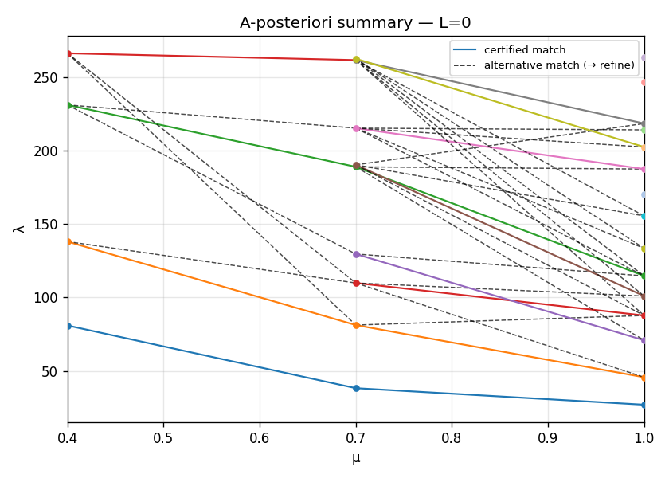
At L = 0, dashed lines cluster near the avoided crossing (\mu \approx 0.8), flagging those subintervals for refinement. By L = 3, all dashed lines are gone — every subinterval is certified and the run terminates.
The avoided crossing at [0.775,\,0.85]
This is what the whole apparatus exists to catch. Between \mu = 0.775 and \mu = 0.85, bands 7 and 8 (1-indexed) approach to a minimum gap of \approx 13.7 and exchange character — an avoided crossing (the gap stays positive; the branches never truly meet). Two independent signals flag the edge:
- Projection mass. The 2\times2 sub-block of \Pi over bands 7–8 is no longer diagonal — each band at the left endpoint has substantial M-overlap with both bands at the right endpoint, so neither matched pair is uniquely supported and the relative threshold keeps the off-pair entries.
- Eigenfunction overlap. The eigenfunctions themselves rotate into one another across the edge — visible directly below.
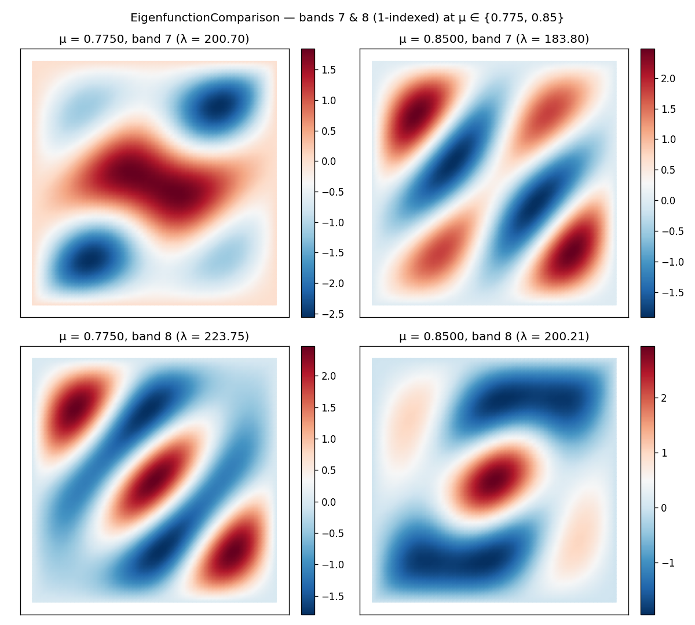
Error table
The run, level by level — the reference Table 1D Error. This is the faithful reproduction: the reference 3 \to 5 \to 7 \to 8 node progression, terminating at L = 3 with every subinterval certified.
| Level | n_{\text{points}} | n_{\text{subintervals}} | n_{\text{uncertified}} |
|---|---|---|---|
| 0 | 3 | 2 | 2 |
| 1 | 5 | 4 | 2 |
| 2 | 7 | 4 | 1 |
| 3 | 8 | 2 | 0 |
n_uncertified counts the subintervals flagged for refinement (REFINE) at each level; it falls to 0 at L = 3, where the run terminates with ran_out=False. There is no n_wrong_match column here: that FirstK diagnostic compares each node’s propagated band labels against a fixed-band truth sweep, and window mode’s ragged ranks have no fixed band index to compare against. The CSV behind this table is window/error_table.csv.
Verdict map
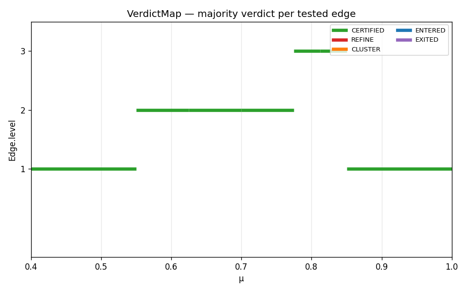
Summary. Window mode is the faithful reproduction of the reference §3.3.2 result: the reference 8-node Table 1D Error grid, computed on the reference window I_\lambda = [0, 270], surfacing the band-7/8 avoided crossing its ragged ranks are wide enough to see.
FirstK mode — the fixed-band approximation
The same problem, with different spectral bookkeeping: keep a fixed n_{\text{eigs}} = 6 smallest bands at every node, regardless of where the spectrum sits. This is the rebuild’s generic mode — it needs no problem-specific window — but on this example it is an approximation, not the reference method, and it is honest to say where that bites.
The tolerances are the reference’s stated 1-D values, which also coincide with the rebuild’s library defaults:
| Quantity | Value | Role |
|---|---|---|
| Eigenvalues per point | n_{\text{eigs}} = 6 | fixed band count (rebuild choice) |
| Pruning threshold | t_\pi = 0.21 | relative cutoff for off-pair projection mass (reference value) |
| Eigenvalue cluster threshold | t_\lambda = 0.001 | groups near-degenerate bands (reference value) |
Reference spectrum
The same dense ground-truth sweep as above, here without window shading — FirstK carries six bands, so the figure shows the two low-band avoided crossings that fall inside them (3↔︎4 near \mu \approx 0.45 and \approx 0.86, 5↔︎6 near \approx 0.72), each drawn as a character-tracked X crossing.
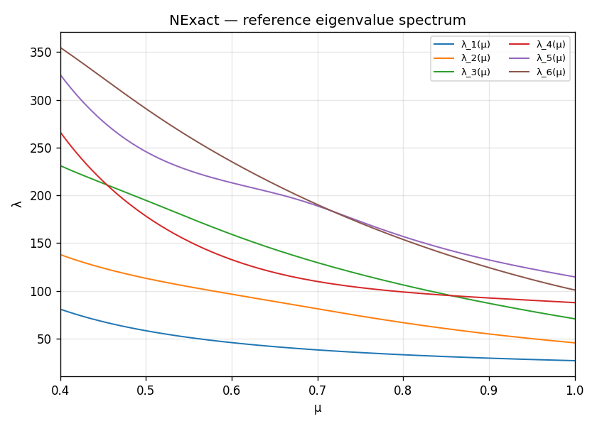
Adaptive grid evolution
Drag the slider to step through L = 0..1. The grid grows 3 \to 4 nodes and terminates at L = 1 — it refines less than the window run, for the reason explained in the comparison below.

Per-level surrogate
Solid coloured curves are the surrogate, reconstructed by the same fixed-slot reshuffle as the window case above; dashed grey is the dense reference. Unlike the window surrogate, FirstK’s is continuous (fixed rank everywhere, no window gaps) but stops at band 6.
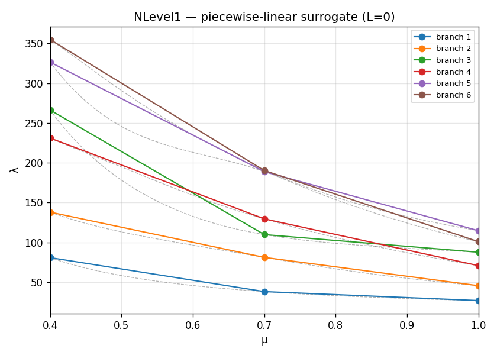
A-posteriori projection matrices
Same layout as the Window section above: solid coloured lines are the primary Hungarian match; black dashed lines are alternative matches that survive pruning and trigger refinement.
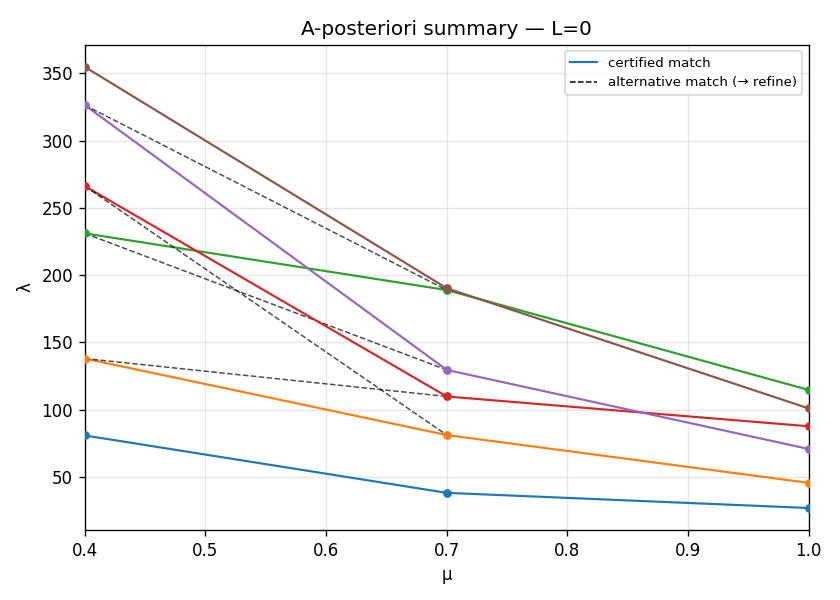
All matrices are square 6 \times 6 throughout — fixed rank on both sides — in contrast with the window run’s ragged, sometimes rectangular \Pi.
Error table
The run, level by level:
| Level | n_{\text{points}} | n_{\text{subintervals}} | n_{\text{wrong\_match}} | n_{\text{uncertified}} |
|---|---|---|---|---|
| 0 | 3 | 2 | 2 | 1 |
| 1 | 4 | 2 | 2 | 0 |
The run terminates at L = 1 with all edges certified (n_{\text{uncertified}} = 0) — on just 4 nodes, coarser than the window run’s 8. It flags one of the two L=0 subintervals, bisects it once, and both halves then certify.
On n_{\text{wrong\_match}}. This column compares the pipeline’s propagated band labels against an independent continuous truth sweep — a strict consistency check available only under FirstK’s fixed bands. It can be positive even when the grid topology is correct, because it counts any single band whose propagated identity differs from the continuous-tracking identity; see the knob-sweep page.
What FirstK is blind to
FirstK’s fixed cutoff at band 6 sits right at the band-7/8 near-degeneracy. It never computes bands 7 or 8, so it cannot see the avoided crossing the window run resolves directly — nor the tighter near-degeneracy among the highest bands near \mu \approx 0.94. What reaches it is only the boundary disturbance that the uncomputed band 7 casts onto its last requested band 6. Under the reference-faithful additive pruning rule, that disturbance does not lift any off-pair projection entry above the matched pair’s by more than t_\pi = 0.21, so the ambiguous last band is certified rather than refined: FirstK flags a single subinterval, bisects once, and terminates at L = 1 on 4 nodes — coarser than the window run’s 8. Lacking the bands that carry the crossing, and with the additive prune declining to manufacture refinement from the boundary ambiguity, the fixed-band approximation simply under-resolves the region the window run refines around. This is the honest cost of approximating a ragged-window problem with a fixed band count.
Comparison: FirstK vs Window
The two modes solve the same PDE with different spectral bookkeeping, and they answer different questions:
- Window asks “track every band inside [0, 270]” — this benchmark’s actual question, ragged ranks and all.
- FirstK asks “track the six smallest bands everywhere” — a uniform approximation that needs no window but cannot reach the upper-band physics.
They terminate at different levels and on different grids:
| Window | FirstK | |
|---|---|---|
| Bands per node | ragged (4–9) | fixed (6) |
| Spectral region | I_\lambda = [0, 270] | 6 smallest bands |
| Tolerances | t_\pi = 0.21,\ t_\lambda = 0.085 | t_\pi = 0.21,\ t_\lambda = 0.001 |
| Terminal level | 3 | 1 |
| Grid nodes | 8 | 4 |
| Reproduces Table 1D Error | yes | no |
The window run reaches 8 nodes and reproduces the reference 1-D grid. FirstK, with the same t_\pi = 0.21 and the reference-faithful additive pruning rule, terminates two levels earlier on just 4 nodes: its fixed 6-band cutoff sits at the band-7/8 near-degeneracy, but the additive prune certifies the resulting boundary ambiguity on band 6 rather than chasing it — so FirstK under-resolves exactly the region the window run refines around.
The two modes do not land on the same grid. Earlier versions of this page showed a different FirstK grid — first a manufactured 8-node match (a tuned t_\pi = 0.35 reverse-engineered to hit the window’s grid, a value found nowhere in the reference), then a 13-node over-refinement — because the pruning rule and preset tolerances had not yet been made reference-faithful. With the faithful additive prune and the stated t_\pi = 0.21, FirstK settles at 4 nodes. The window-mode run is the faithful reproduction; FirstK here is a fixed-band approximation that under-resolves the crossing it cannot see.
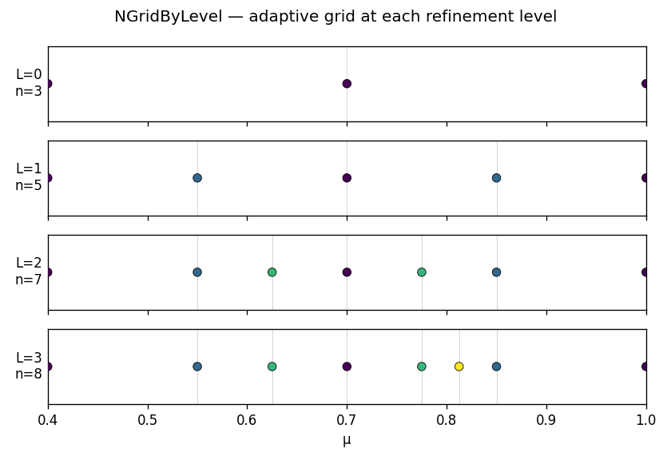
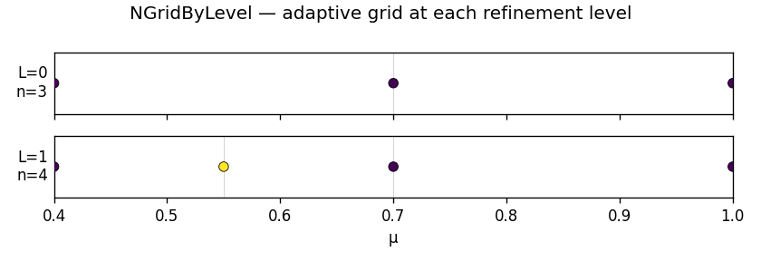
The surrogate’s accuracy as a reduced-order model — versus a dense solve at arbitrary \mu — is measured for both modes on the ROM vs dense page.
Side-by-side with the original MATLAB
The panels below place the Python rebuild next to a freshly generated figure from the dissertation’s own MATLAB code (the frozen CodeSeptember dump), so the two implementations can be eyeballed directly. The MATLAB figures are produced headlessly by scripts/matlab_figures.py under MATLAB R2026a and committed as artifacts (CI has no MATLAB, so they are not regenerated on every build).
- Source:
GreedyAlgorithm/CodeSeptember/Main.m,choice1='1',InitialLevel=2, run throughscripts/matlab_figures.py(interactive prompts,VideoWriter, and Windows-only paths are neutralised; the frozen dump is never edited — the grid-helperslev2knots_doubling/tensor_gridare addpath’d from theCleandump, which only fills gaps CodeSeptember lacks). - 1-parameter coefficient (this page): the frozen diffusion solver hard-wires the §3.3.3 2-parameter coefficient
[µ₁⁻²; 0.8·µ₂⁻¹; µ₂⁻²]and cannot express the §3.3.2 eq-3.10 coefficient. The MATLAB figures here therefore use a documented, unfrozen adaptation —matlab/matched_eig1D_3_3_2.m, an editable copy of the frozenmatched_eig2Dexample.mwith only the coefficient replaced by[µ⁻²; 1; 0.7⁻²](eq-3.10 exactly). Everything else (matching, a-posteriori gate) is byte-for-byte the frozen original. - Tolerances: the frozen
choice1='1'valuest_lambda=0.085,t_pi=0.57, windowI_λ=[0,200]— not the rebuild’s window preset, so the two grids are expected to differ in node count.
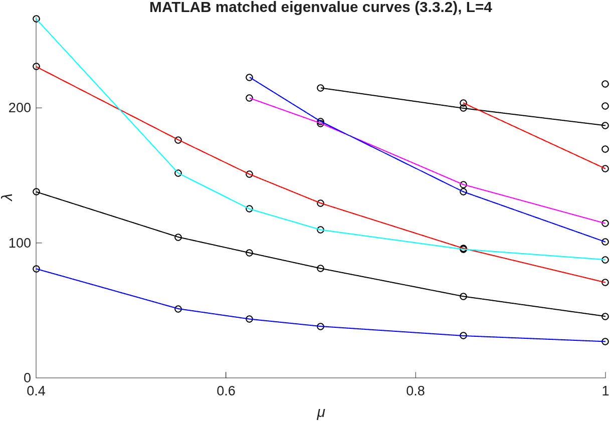
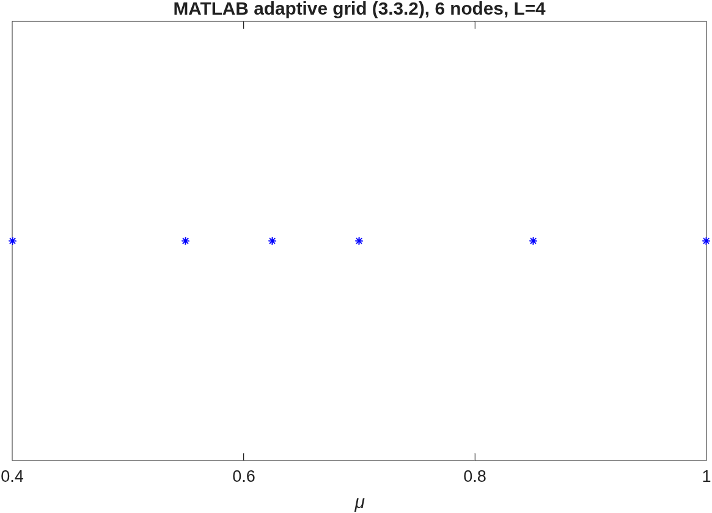
choice1='1' tolerances (t_\lambda=0.085, looser than the window preset). Refinement concentrates in the same [0.7, 0.85] crossing region.The two adaptive grids are not expected to be node-for-node identical — they run at different tolerances, and the MATLAB grid uses the node-centric forward_points refinement the rebuild only reproduces under its forward_points strategy. What the pairing shows is that both implementations place their refinement in the same crossing region and recover the same descending band structure. Rebuild-only figures on this page (per-level sliders, a-posteriori summaries, verdict map) have no MATLAB counterpart — the original code never draws them.